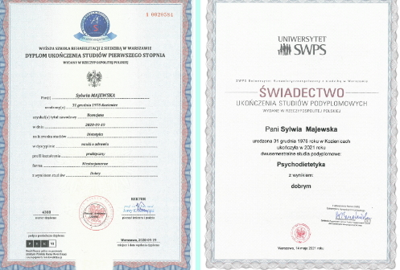
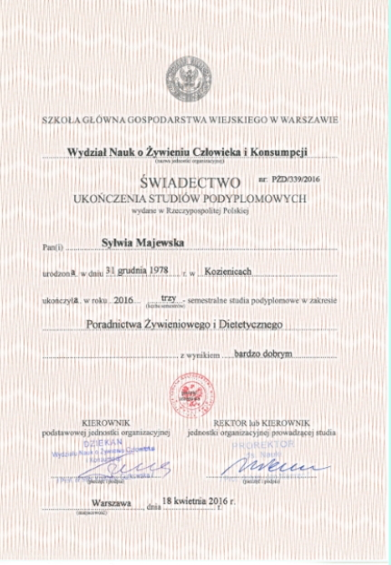
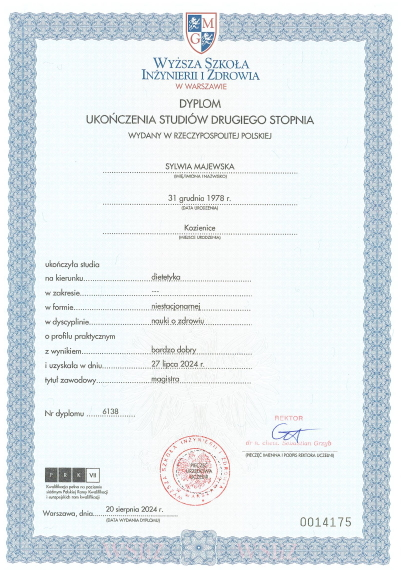
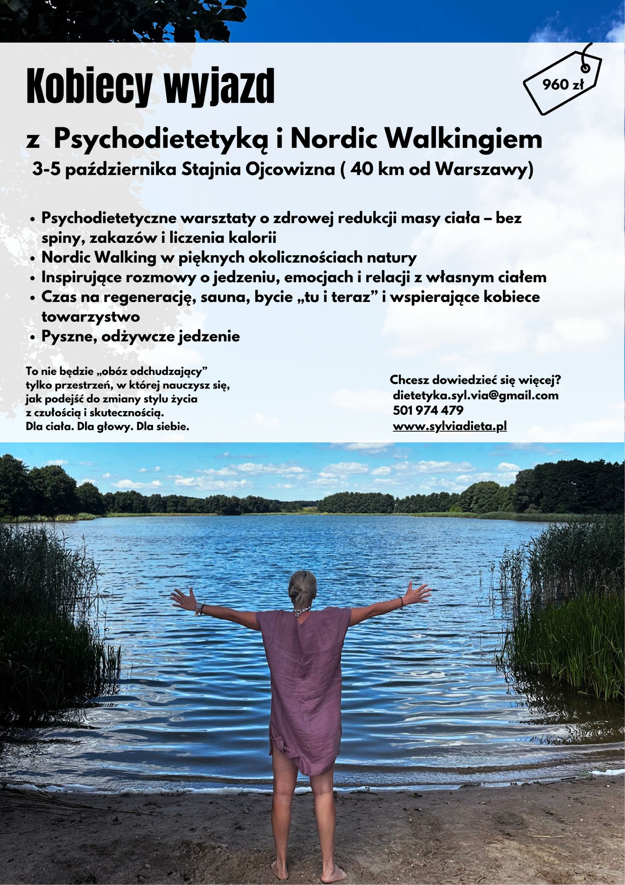

Nazywam się Sylwia Majewska, a VIA
to droga do zdrowego odżywiania – ścieżka, którą chcę poprowadzić
każdego z Was.
Od ponad 8 lat zajmuję się żywieniem i jego wpływem na zdrowie oraz
samopoczucie. Dietetyka to nie tylko moja pasja, ale i sposób życia.
W mojej pracy nie wierzę w szybkie rozwiązania ani diety cud –
stawiam na dobrze zbilansowany, urozmaicony i indywidualnie dopasowany
jadłospis.
Dieta "szyta na miarę", uwzględniająca schorzenia, styl życia i poziom
stresu, to klucz do sukcesu.
Moim celem jest pomoc w wprowadzeniu zdrowych nawyków, by dieta stała
się naturalnym, zdrowym sposobem odżywiania.
Uzyskałam tytuł magistra dietetyki w Wyższej Szkole Inżynierii i Zdrowia
oraz ukończyłam studia podyplomowe z zakresu psychodietetyki na
Uniwersytecie SWPS.
Dodatkowo posiadam tytuł Instruktora Nordic Walkingu. Jestem również
absolwentką Wydziału Chemii na Politechnice Warszawskiej, co pozwala mi
patrzeć
na żywienie i zdrowie z szerszej perspektywy, z uwzględnieniem
procesów biochemicznych zachodzących w organizmach. Stale poszerzam
swoją wiedzę,
uczestnicząc w konferencjach i szkoleniach dotyczących alternatywnych
terapii, zdrowego odchudzania i nowoczesnych metod żywienia.
Jako psychodietetyk łączę wiedzę z zakresu dietetyki z podejściem
psychologicznym, aby pomóc pacjentom zrozumieć emocjonalne i psychiczne
aspekty jedzenia.
Często to właśnie stres, emocje, nawyki czy trudności z radzeniem sobie z
trudnymi sytuacjami życiowymi wpływają na sposób, w jaki się odżywiamy.
Psychodietetyka daje mi możliwość nie tylko zmiany nawyków żywieniowych,
ale także pracy z pacjentem nad poprawą jego podejścia do jedzenia,
budowaniem zdrowych relacji z żywnością i radzeniem sobie z
emocjami związanymi z jedzeniem. Zajmuję się także pracą nad motywacją,
aby pomóc wprowadzać trwałe zmiany w stylu życia, które są zgodne z
indywidualnymi potrzebami i celami.
Specjalizuję się w dietoterapii: cukrzycy, chorób układu krążenia,
celiakii, chorób tarczycy oraz w żywieniu osób z chorobami
nowotworowymi.
Tworzę plany żywieniowe dla osób aktywnych fizycznie i organizuję
warsztaty wyjazdowe, szkolenia oraz prelekcje. Zwracam szczególną uwagę
na aspekt psychologiczny, redukcję stresu i aktywność fizyczną, bo wiem,
że zdrowie to nie tylko dieta, ale także harmonia ciała i umysłu.
Moje usługi
Oferuję konsultacje w trybie stacjonarnym lub online – wybierz formę, która najlepiej odpowiada Twoim potrzebom.
- Stacjonarnie: Spotkania odbywają się w przytulnym gabinecie, w spokojnej i komfortowej atmosferze.
- Online: Wygodna opcja dla tych, którzy preferują elastyczność – konsultacje przeprowadzam przez bezpieczne platformy wideorozmów.
Skontaktuj się, aby ustalić szczegóły i umówić termin!
Pierwsza konsultacja dietetyczna z elementami psychodietetyki
- Zebranie informacji dotyczących preferencji żywieniowych, stanu zdrowia, wcześniej stosowanych diet, planu dnia oraz aktywności fizycznej
Szczegółowy wywiad pozwalający poznać Twoje nawyki i potrzeby. - Wywiad psychodietetyczny
Analiza Twoich przekonań i zachowań związanych z jedzeniem. - Interpretacja wyników badań laboratoryjnych
Jeżeli przyniesiesz aktualne wyniki swoich badań (morfologia, glukoza, profil lipidowy), profesjonalnie je zinterpretuję, aby lepiej dostosować plan żywieniowy do Twojego zdrowia. - Analiza dotychczasowego sposobu odżywiania oraz nawyków żywieniowych
Analizuję Twój obecny sposób odżywiania, jakość i regularność posiłków oraz wskazuję obszary wymagające zmian, aby wspierać Twoje cele zdrowotne. - Pomiar i analiza składu ciała przy użyciu analizatora InBody 120
Dokładne określenie m.in.:- zawartości tkanki tłuszczowej, masy kostnej i mięśniowej,
- podstawowej przemiany materii,
- ilości wody komórkowej.
Jadłospis
Jako rezultat pracy dietetyka po pierwszej wizycie powstaje jadłospis.
- Jadłospis – indywidualny plan żywieniowy na tydzień lub dwa tygodnie
Jadłospis uwzględniający twój stan zdrowia i styl życia, dostosowany do Twoich potrzeb. - Dieta dostosowana do stylu życia oraz preferencji smakowych
Uwzględnia umiejętności kulinarne, dostępny czas oraz budżet. - Przesłanie jadłospisu drogą mailową lub w formie drukowanej
Omówienie planu odbywa się telefonicznie lub przez Zoom. Jadłospis przekazywany jest w teczce po wcześniejszym opłaceniu usługi. - Dostęp do aplikacji dietetycznej
Umożliwia bieżący wgląd w plan żywieniowy, przepisy oraz listy zakupów.
Konsultacja psychodietetyczna
W swojej pracy łączę wiedzę z zakresu dietetyki i psychologii, by towarzyszyć Ci w budowaniu bardziej życzliwej i zdrowej relacji z jedzeniem oraz z samym sobą. Konsultacja obejmuje:
- Doradztwo psychodietetyczne
- Materiały edukacyjne i ćwiczenia
Wręczone na wizycie lub przesłane drogą mailową, wspierające Twój proces zmiany.
Dla kogo są konsultacje psychodietetyczne? Zapraszam osoby, które:
- zmagają się z zaburzeniami odżywiania, takimi jak anoreksja, bulimia czy kompulsywne objadanie się,
- doświadczają trudności w relacji z jedzeniem i własnym ciałem,
- mierzą się z napadami objadania się lub nadmiernymi restrykcjami,
- odczuwają poczucie winy po jedzeniu lub lęk związany z przybieraniem na wadze,
- pragną odzyskać spokój, poczucie kontroli i zdrową relację z jedzeniem,
- są w trakcie terapii i potrzebują dodatkowego wsparcia żywieniowego w procesie leczenia.
Pakiet VIP
- 3 miesiące kompleksowego wsparcia żywieniowego i psychodietetycznego
Regularna, zaplanowana współpraca oparta na Twoich indywidualnych potrzebach. - 1 x konsultacja wstępna (90 min)
Szczegółowa analiza Twoich potrzeb, historii żywieniowej oraz celów, które chcesz osiągnąć. - 6 x spotkań indywidualnych (50–60 min)
Spotkania co 1–2 tygodnie, w formie online lub stacjonarnej — w zależności od Twojej wygody i preferencji. - 2 x indywidualny jadłospis na 14 dni
Jadłospisy dopasowane do Twoich preferencji, trybu życia, stanu zdrowia i aktualnych możliwości. - Stały kontakt mailowy lub wiadomościowy
Możliwość bieżącego kontaktu i uzyskania wsparcia pomiędzy spotkaniami, gdy tego potrzebujesz. - Materiały wspierające
Ćwiczenia, dzienniki, wskazówki — starannie dobrane do Twojej sytuacji i aktualnych potrzeb. - Elastyczny grafik i pierwszeństwo w umawianiu wizyt
Możliwość umawiania terminów dostosowanych do Twoich możliwości czasowych.
Cennik
| Usługa | Cena |
|---|---|
| Pierwsza konsultacja dietetyczna z elementami psychodietetyki (60-80 minut) | 210 zł |
| Konsultacja psychodietetyczna (60-80 minut) | 200 zł |
| Jadłospis 7-dniowy | 250 zł |
| Jadłospis 14-dniowy | 460 zł |
| Wizyta kontrolna - dietetyczna (40-60 minut) | 140 zł |
| Profesjonalna analiza składu ciała z omówieniem wyników | 60 zł |
| Modyfikacja jadłospisu - wprowadzenie powyżej 4 zmian | 80 zł |
| Pakiet VIP | 1200 zł |
Pakiety dla par
| Pakiet | Cena |
|---|---|
| Pierwsza wizyta (około 120 min) | 400 zł |
| Plan dietetyczny dla par 7-dniowy | 450 zł |
Wizyta
Przygotowanie do wizyty
Dzienniczek żywieniowy
Aby pierwsza wizyta była jak najbardziej owocna, proszę Cię, żebyś przed spotkaniem wypełnił/a dzienniczek żywieniowy z kilku dni – to dla mnie cenne źródło informacji o Twoim sposobie odżywiania. Dzięki temu już na starcie będziemy mogli konkretnie porozmawiać o Twoich nawykach.
Najlepiej, jeśli opiszesz w dzienniczku żywieniowym trzy dni:
- dwa dni robocze (jeśli pracujesz)
- oraz jeden dzień wolny, np. weekendowy.
To bardzo pomoże mi lepiej zrozumieć Twoją sytuację i dostosować wsparcie!
Badania laboratoryjne
Warto wykonać kilka badań, które dadzą mi pełniejszy obraz Twojego zdrowia i pomogą stworzyć skuteczny plan żywieniowy. Oto lista badań, które warto zrobić przed pierwszą konsultacją:
- Morfologia krwi z rozmazem – pokaże ogólny stan Twojego organizmu.
- Panel tarczycowy (TSH, fT3, fT4) – to ważne, by ocenić pracę tarczycy, która wpływa na metabolizm.
- Glukoza na czczo i insulina – pomogą sprawdzić, jak Twój organizm radzi sobie z cukrem.
- Lipidogram (cholesterol całkowity, HDL, LDL, trójglicerydy) – da informacje o Twoim profilu lipidowym.
Jeśli masz już wyniki tych badań, zabierz je na wizytę – to bardzo ułatwi mi przygotowanie planu dla Ciebie. Jeśli czegoś brakuje, nie martw się, możemy ustalić, co warto zrobić w pierwszej kolejności.
Pomiar składu ciała metodą BIA
Pomiar składu ciała metodą BIA (bioimpedancja elektryczna) to metoda analizy składu ciała. Dzięki niej można szybko i bezboleśnie sprawdzić, z czego składa się Twoje ciało — ile masz wody, tłuszczu, mięśni czy kości. Bioimpedancja mierzy opór elektryczny tkanek, co pozwala oszacować zawartość wody, tłuszczu i mięśni.
Działa to tak: stajesz bosymi stopami na urządzeniu InBody 120, które przypomina zwykłą wagę. Przez ciało przepuszczany jest bardzo słaby, zupełnie nieodczuwalny prąd elektryczny. Ponieważ różne tkanki (np. tłuszcz, mięśnie) różnie przewodzą prąd, urządzenie na tej podstawie oblicza skład ciała. Następnie wyniki pomiaru są przesyłane do programu komputerowego zsynchronizowanego z urządzeniem InBody 120.
Na tej podstawie dietetyk może dokładnie ocenić proporcje masy mięśniowej, tłuszczowej i wody w organizmie, a następnie dostosować plan żywieniowy, suplementację i zalecenia aktywności fizycznej do indywidualnych potrzeb pacjenta.
Pomiar składu ciała metodą BIA stosuje się często oprócz dietetyki również w sporcie i medycynie do monitorowania zdrowia i formy.
Przygotowanie do badania BIA
Aby badanie było miarodajne, zastosuj się do poniższych zaleceń:
- Na 2-3 godziny przed badaniem nie spożywaj posiłków i nie pij napojów.
- Przez minimum 12 godzin przed wizytą nie uprawiaj intensywnego wysiłku fizycznego.
- Przed wizytą zadbaj o zaspokojenie potrzeb fizjologicznych, bo zalegający mocz lub kał mogą wpływać na rozkład wody w organizmie i zaburzyć dokładność pomiaru składu ciała.
- Nie pij alkoholu na 48h przed pomiarem.
- Nie zażywaj leków diuretycznych przez 7 dni (oczywiście jeżeli lekarz prowadzący na to pozwoli).
- Nie smaruj stóp kremem przez 12 godzin przed wizytą (badanie wykonywane jest na bosych stopach).
- Nie wykonuj badania podczas choroby zakaźnej (podczas choroby zakaźnej organizm zatrzymuje wodę i zmienia się gospodarka płynami, co może zniekształcić wyniki pomiaru składu ciała).
- W przypadku kobiet: nie wykonuj badania w tygodniu przed menstruacją, lepiej zrobić badanie w innym czasie cyklu. Przed menstruacją w organizmie kobiety zatrzymuje się więcej wody, co może zafałszować wynik pomiaru składu ciała. Może np. pokazać większy poziom wody czy tłuszczu niż jest w rzeczywistości.
Przeciwwskazania do badania BIA
Badanie BIA nie może być przeprowadzone:
- u osób z wszczepionym rozrusznikiem serca lub innymi przyrządami medycznymi, jak np. metalowymi implantami.
- u kobiet w ciąży
- u osób chorych na epilepsję.
Dyplomy



Nordic Walking
Nordic walking to najlepsza aktywność fizyczna na świecie! To niepozorne, aktywne chodzenie z kijami ma same zalety:
- wspomaga nasz układ odpornościowy,
- zmniejsza obciążenie stawów o 30%,
- wspomaga pracę układ krążenia i układu oddechowego,
- zmniejsza ryzyko osteoporozy,
- wzmacnia mięśnie,
- redukuje stres i poprawia nastój,
- wspomaga proces odchudzania,
- zmniejsza ryzyko takich chorób jak nowotwory czy cukrzyca,
- wspomaga pracę układu hormonalnego.
Nie musisz od razu kupować kijków do nordic walking. Możesz je bezpłatnie wypożyczyć na zajęciach, by przetestować ten sport.
Zajęcia grupowe i indywidualne
Jestem certyfikowanym instruktorem nordic walking. Zapraszam na 1,5-godzinne zajęcia grupowe lub indywidualne! Co zyskasz?
- Dowiesz się, jak prawidłowo dobrać kijki do nordic walking.
- Opanujesz technikę aktywnego chodzenia z kijkami krok po kroku.
- Nauczysz się angażować mięśnie górnej części ciała w optymalny sposób.
- Wzmocnisz i rozciągniesz ciało.
- Dotlenisz organizm i poprawisz zdrowie.
- Spędzisz czas aktywnie, w świetnej atmosferze!
Istnieje możliwość bezpłatnego wypożyczenia kijków.
Cennik zajęć nordic walking
| Rodzaj zajęć | Czas trwania | Cena |
|---|---|---|
| Zajęcia indywidualne | 1,5 godziny | 150 zł |
| Zajęcia dla 2 osób | 1,5 godziny | 90 zł / osoba |
| Zajęcia grupowe (3–4 osoby) | 1,5 godziny | 60 zł / osoba |
| Zajęcia grupowe (5–8 osób) | 1,5 godziny | 50 zł / osoba |
| Pakiet indywidualnych spotkań treningowych (3×1 godzina) | 3 godziny | 400 zł (całość) |
| Zniżka dla organizatora grupy (powyżej 4 osób) | — | 50% zniżki dla osoby, która zgłosi grupę |
| Wypożyczenie kijków do nordic walking | — | gratis |
Szkolenia i warsztaty
| Usługa | Opis | Czas trwania | Cena |
|---|---|---|---|
| Warsztaty „Świadome Odżywianie" | Praktyczne warsztaty dla maksymalnie 20 osób, uczące zasad zdrowego odżywiania. | 120 minut | 250 zł |
| Szkolenie „Zdrowy Start" | Zajęcia dla dzieci szkolnych, promujące zdrowy styl życia i aktywność. | 90 minut | 200 zł |

Kontakt
Sylwia Majewska
dietetyk, psychodietetyk, chemik
Gabinet prywatny
Marki, ul. Słoneczna 3c/110
Tel. 501 974 479
Nr konta bankowego: 26 1020 1042 0000 8402 0372 8599
email:
dietetyka.syl.via@gmail.com